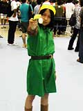
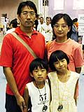
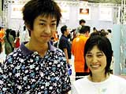
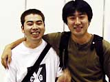

 超ド級の盛り上がりをみせる、大乱闘スマッシュブラザーズDXプレミアムファイト!を見守る観客の中に、ひときわ目立つリンクのコスプレをした少女を発見。彼女の名前は伊藤真理さん(17歳)。なんと新潟県から、深夜0時5分の高速バスに乗って来場したそうです。伊藤さんの今回の注目ソフトは、もちろん『大乱闘スマッシュブラザーズDX』。実は先ほど、一回戦負けしたばかりなんだって。任天堂以外のハードは持っていないという、根っからの任天堂ファンの伊藤さん。今日はこれから新幹線に乗って新潟まで帰るそうです。お疲れ様です。ぜひ気をつけて帰ってくださいね。
|
 千葉の市川にお住まいの荒木さん夫妻は、子供さんの夕貴ちゃん(9歳)と智貴くん(7歳)にせがまれてのご来場。でも任天堂スペースワールドのことは、こちらのホームページを見て知ったそうです。ありがたや〜。夕貴ちゃんと智貴くんのお目当てソフトは、『大乱闘スマッシュブラザーズDX』。プレミアムファイトには出たのかな?と聞いてみると、お母さんから「1回戦負けしちゃいました(笑)」というお返事が。2人とも、気を落とさずに、ゆっくり他のゲームも楽しんで帰ってね。
|
 お次は横浜からご来場のお2人、馬上和也さん(24歳)とアキコさん(22歳)にお話を聞いてみました。アキコさんはそんなにはゲームには詳しくないそうですが、馬上さんは、初代ファミコンのころからゲームに親しんでいるという古株ゲーマー。今まで世に出たゲーム機も、ひととおり持っているとのことです。馬上さんの気になるソフトは、『VIRTUA STRIKER3 ver.2002(仮称)』。パッと見、とても健康的そうな馬上さんらしいセレクトという気がしました。発売の2002年が待ち遠しいですね。
|
神奈川県からお越しの栗原里実さん(写真左)と三島未緒さん(写真右)は、中学時代からの同級生であるという16歳。なんと、任天堂スペースワールドには毎年来ている強者なのです。注目のゲームを尋ねると、2人そろって『どーもくんの不思議テレビ』というお返事が返ってきました。どーもくんの大ファンというお2人、このへんの回答も、なかなかの強者だという気がします。
|
 『ルイージマンション』をプレイし終えたばかりの、佐藤康伸さん(写真左)と大友裕之さん(写真右)を捕まえてお話を聞いてみました。本日はニンテンドーゲームキューブのソフトを何より楽しみにしていたという大友さんは、『大乱闘スマッシュブラザーズDX』も1時間並んでプレイしたそうです。『ルイージマンション』の感想を聞くと、「見た目は簡単そうだったんですが、やってみると意外と難しいですね」とお2人。「スペースワールドは今年初めて来たんですが、楽しいですね〜。今日は、時間のある限りいろんなゲームを遊びつくして帰りますよ」と大友さんは話してくれました。明日も来てくれますか?という質問に、ハイと答えてくれました。
|